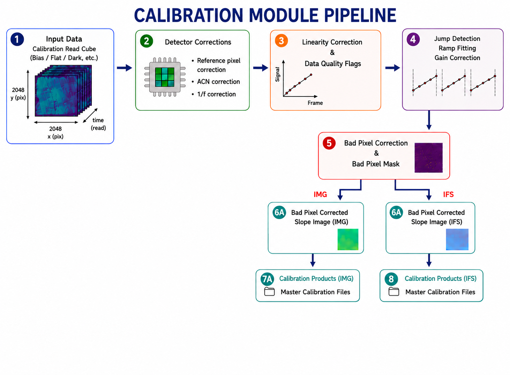
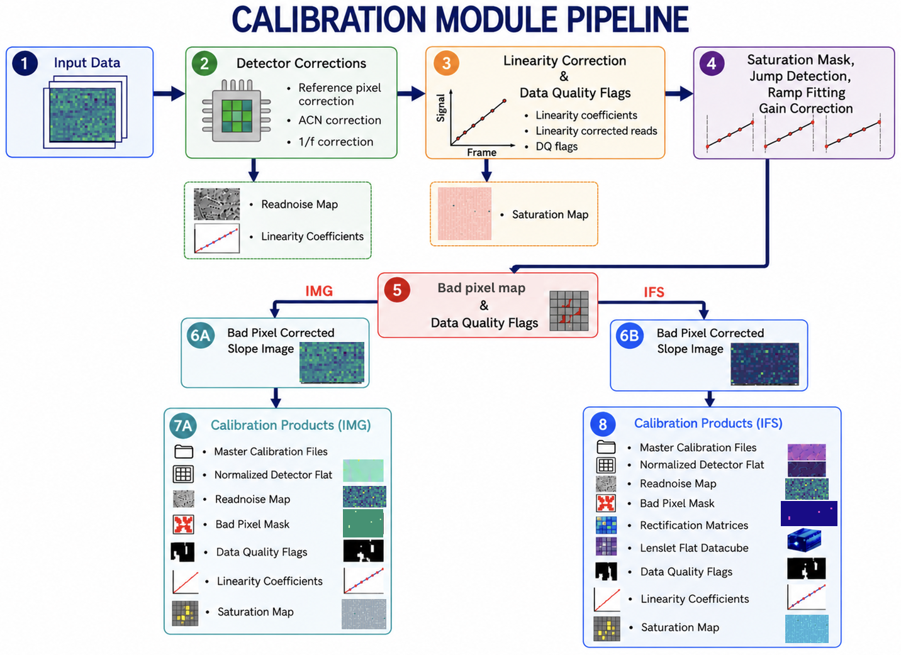
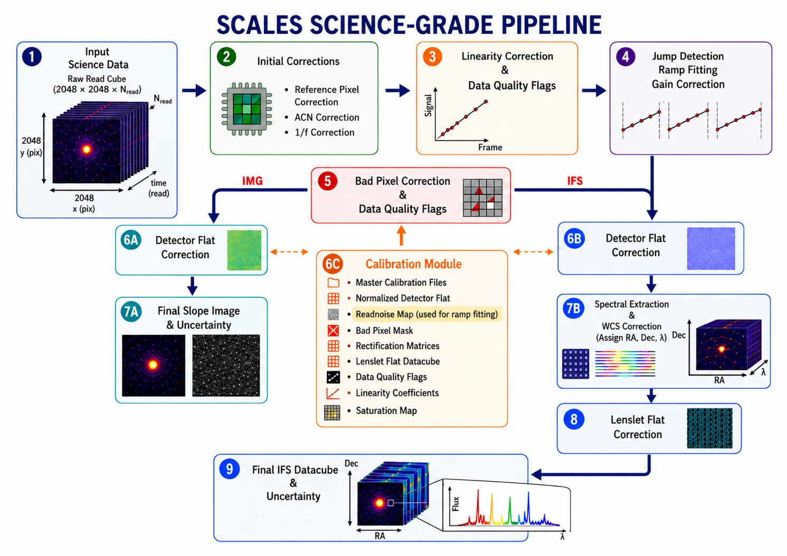

Modes of DRP Operation
The DRP consists of three main modules: (1) a calibration module-I, calibration module-II, and a science-grade module. Overall idea of each modules are explained below.
Calibration Module-I
Calibration Module-I automatically processes dark, detector flat, monochromatic calibration lamp, and bias exposures following the sequence of processing steps described in Primitives. The module generates the corresponding master calibration files. The configuration parameters can be adjusted to customize the data reduction steps.


Flowchart of the SCALES-DRP Calibration Module-I.
Calibration Pipeline-II
The calibration module is the core component of the SCALES-DRP. It automatically processes dark, detector flat, monochromatic calibration lamp, and bias exposures using the sequence of processing steps described in Primitives.
The calibration module produces two categories of output products. The first category consists of daily master calibration products generated by sigma-clipped median combining multiple calibrated slope images. These include master detector flats, dark frames, and bias frames for both the imaging and IFS detectors.
The second category consists of calibration reference products that are not regenerated on a daily basis, but are instead monitored periodically by WMKO staff and updated as needed. These include rectification matrices and lenslet flats for each IFS observing mode derived from master monochromatic calibration exposures, read-noise maps generated from master bias frames, gain maps derived from flat-field exposures, persistence measurements from sequences of dark and detector flat exposures, and bad pixel maps derived from master dark and detector flat frames. Detector-level corrected flat exposures are also used to derive detector non-linearity correction coefficients and the associated data quality (DQ) flag maps.
Monochromatic calibration data are acquired less frequently because the optical geometry of the instrument is expected to remain stable over much longer timescales than the detector calibrations. These exposures are used to generate the rectification matrices required for spectral extraction. The rectification matrices encode the detector response of every lenslet PSF (psflet) as a function of wavelength, providing the mapping between detector pixels and the reconstructed three-dimensional data cube.
A small number of monochromatic calibration exposures are acquired each time the instrument configuration is changed. These exposures are used to measure and correct for instrument flexure on a daily basis.


A flowchart of the SCLAES-DRP calibration module-I.
Science-Grad Pipeline
The science module processes science exposures by applying the detector-level corrections described in Primitives, followed by ramp fitting, bad pixel correction, and spectral extraction. Using the calibration products generated by the calibration module, it produces calibrated slope images and wavelength-calibrated three-dimensional IFS data cubes.


A flowchart of the SCLAES-DRP science-grade module.